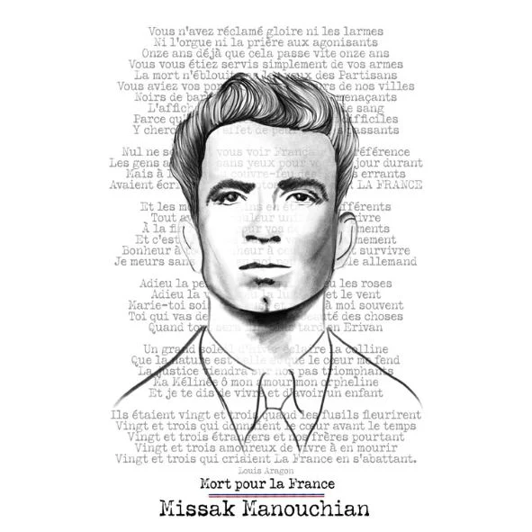

Prise de position fédérale
Missak et Mélinée Manouchian. Le sens de notre hommage à Niort
Date indiquée par Facebook · 19 février 2024
Repères éditoriaux
À la veille de leur entrée au Panthéon, nous avons rappelé l’importance de la Résistance communiste et étrangère dans notre histoire.
Texte conservé avec la publication
Le 21 février 2024, Missak et Mélinée Manouchian entreront au Panthéon. C’est un trou béant dans notre mémoire officielle qui va être comblé. Cet événement consacre le rôle important joué jusqu’à la Libération par ce couple de résistants communistes immigrés engagés dans les FrancsTireurs et Partisans-Main d’œuvre immigrée (FTP--MOI) a pour la France, pour cette patrie qui était devenue la leur. Arméniens ayant dû fuir le génocide, Missak et Mélinée rejoignent la France dans l’entre-deux-guerres pour y vivre et y travailler. Alors qu’ils n’avaient pas la nationalité française, ils se sont battus pour la liberté de notre pays et celle de tous les peuples face au nazisme.
Au Panthéon, ils seront installés pour l’éternité dans le caveau numéro XIII, et une plaque sera installée à l’entrée en l’honneur des 22 autres camarades de l’affiche Rouge, et de Joseph Epstein, responsable de ce réseau FTP-MOI.
Avec la CGT 79, et avec le soutien de l’ADIRP 79 (Association Déportés Internés Résistants Patriotes), le Parti Communiste Français des Deux-Sèvres entend rendre hommage à ces hautes figures de notre histoire et donne rendez-vous à toutes les habitantes et à tous les habitants du Département pour commémorer dignement ces camarades morts pour la France.
Le mercredi 21 février à 18H30 place de la Brèche
Avec la participation de la chorale niortaise « Y’en a marre »
Venez avec une bougie pour symboliser plus largement toutes celles et tous ceux qui sont tombé.es face au nazisme, face à l’extrême droite française, face au gouvernement de Vichy.
Puis, nous nous dirigerons vers l’exposition qui est consacrée à ces camarades, au siège de la Fédération du PCF79 où nous prendrons le verre de l’amitié.
#Manouchian
#FTPMOI

Sources
Archive rouge · export Facebook · AR-0002-FB-01473
À lire aussi · À Niort, nous avons rendu hommage à Missak et Mélinée Manouchian et à leurs camarades